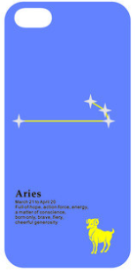

白羊座性格特点
 爱恨分明不吃回头草
白羊座的人爱恨分明，爱就是爱，恨就是恨。在爱情上，白羊是相当干脆的，不喜欢拖泥带水，属于行动派，要求立见真章。他们最不能忍受一厢情愿。
凡是白羊座的人决定不要的东西，绝不会再捡回来，否则他无颜面对自己。不吃回头草，也是白羊座人好强的证据。
乐观乃天性不是不悲观
白羊座天性乐观，但长大后遭遇到的事了，他们也会悲观到了极点。只不过悲观归悲观，既然不想死，活下去就得乐观点，日子才会有趣些。因此白羊座的人只不过是不把悲观当一回事，并不是不悲观。而他们乐观的天性极具感染力，你得稳着点，以免误陷入一塌糊涂的乐观绝地之中。
|
爆发型的浪漫
白羊座的人当然是浪漫的，但是是属于爆发型的浪漫。一点一滴积出来的浪漫，对白羊座来说，强度不够，只觉累赘、厚重，这种浪漫容易分叉、断裂。白羊座喜欢在庆典的夜晚，与情人并肩仰望烟火在夜空中爆放出光芒万丈，而那也正象征着爱情发生的瞬间，浪漫不过了。
正经八百的，会要他的命
白羊座出现在高贵、华丽的场合中，不会显得格格不入，但是他自己却难受得要命，因为他不能自在地跷二郎腿，不能在高兴时放浪形骸。正经八百的，会要他的命。
爱情是一生中最大的课题
白羊是很容易不耐烦的。对他们来说，爱情有两种，一种是真的，一种是假的。假情爱情，极易发生在冲动而善感的白羊座身上，但很快会结束，并且会像是从未发生过。真正的爱情，是白羊座一生中最大的课题，他总觉得这个课题怎么写也写不完整。
返回主页
|